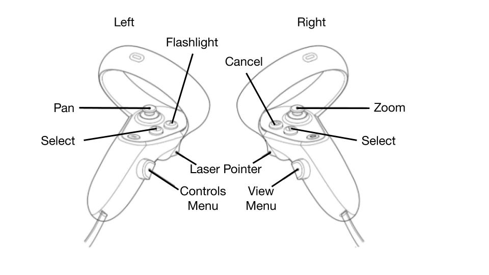
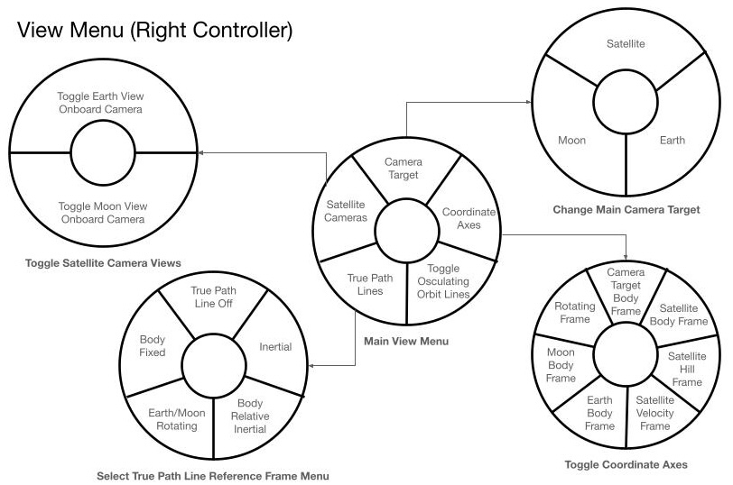
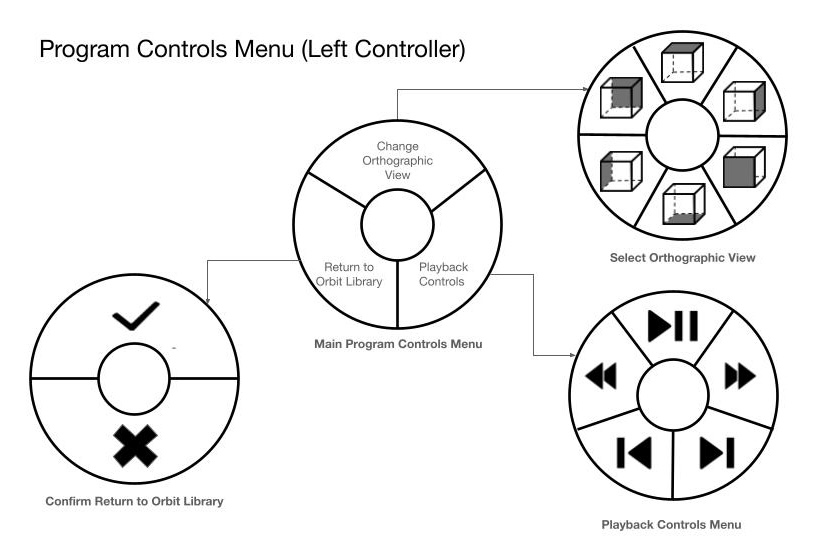

Configure Vizard for Virtual Reality (Windows Only)
Note
Vizard is configured to run with Unity’s OpenXR packages and has been deployed with Meta Quest 2 and Quest 3 headsets.
Note
To test with a Meta Quest headset, the Meta Horizon Link application must be installed on the Windows machine, and the Quest headset must have developer mode enabled.
Configure Vizard for VR
Open
VizardUnityProjectin the Unity Editor.Install XR packages
Open the Unity Package Manager through
Window / Package Manager.Select
Unity Registryfrom the left-hand list.Select
XR Interaction Toolkitfrom the available packages.In the package details panel, click
Install.Next, select
XR Plug-In Managementfrom the Unity Registry list.In the package details panel, click
Install.Close the Unity Package Manager.
Enable OpenXR in XR Plug-in Management
Open
Edit / Project Settings.Select
XR Plug-In Managementin the left-hand list.Enable
OpenXRin the list of plug-in providers.Confirm that
Initialize XR on Startupis enabled.
Add the
VIZARD_OPENXRcompile argumentIn Project Settings, select
Player.Scroll to
Scripting Define Symbols, click+, and addVIZARD_OPENXR.Click
Apply.
Add VizardVR_MainScene to the scene list
Open the Build Profiles panel through
File / Build Profiles.Select
Scene Listfrom the left-hand list.Enable
Scenes/VizardVR_MainScene. Optionally disable the 2D main scene by clearingScenes/VizardMainScene.
Connect the Quest headset
Open the Meta Horizon Link application.
Connect the Quest headset through a cable, or wirelessly if preferred, and enable the Link. The headset should show a white waiting room.
Press
Playin the Unity Editor on the desktop. File selection is not currently available from within the headset, so playback-file selection or live Basilisk connection setup must be done from the desktop Editor window.
Vizard VR Controller Guide
Controller Guide
Vizard VR supports Meta Quest 2 and Quest 3 controllers. Changes to the controller
configuration can be made in the VizardOpenXR input action asset.
{kind=link}

View Menu
{kind=link}

Program Controls Menu
{kind=link}
